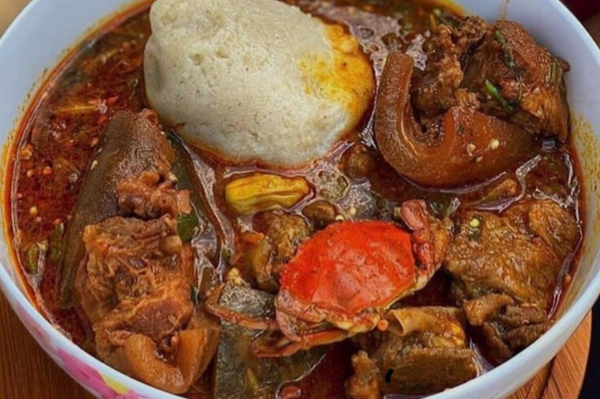

Band and Okro Stew

DESCRIPTION
Banku is a favourite dish enjoyed by the Fantes, Gas, and Ewes in Ghana.
It is one of Ghana's amazing dish enjoyed by many household.
This meal is one of the best, it is delicious and tasty.
Banku can be eaten with different kinds of soup like okro stew,groundnut soup,goat light soup and etc.
INGREDIENTS
1 cup of Corn Dough
1/2 cup of Cassava Dough
Salt to taste
1 cup Okra, diced
1 pound meat or chicken, cut into pieces
2 onions
4 medium-sized tomatoes
4 pieces Kpakpo shito pepper
1 inch root Ginger
2 cloves of garlic
1/4 tablespoons herrings
Cowhide (Wele)
1/2 cup Palm Oil or Vegetable oil
Crabs (optional)
1 salted fish(momoni)
Salt to taste
Seasoning cube or powder
Back to home